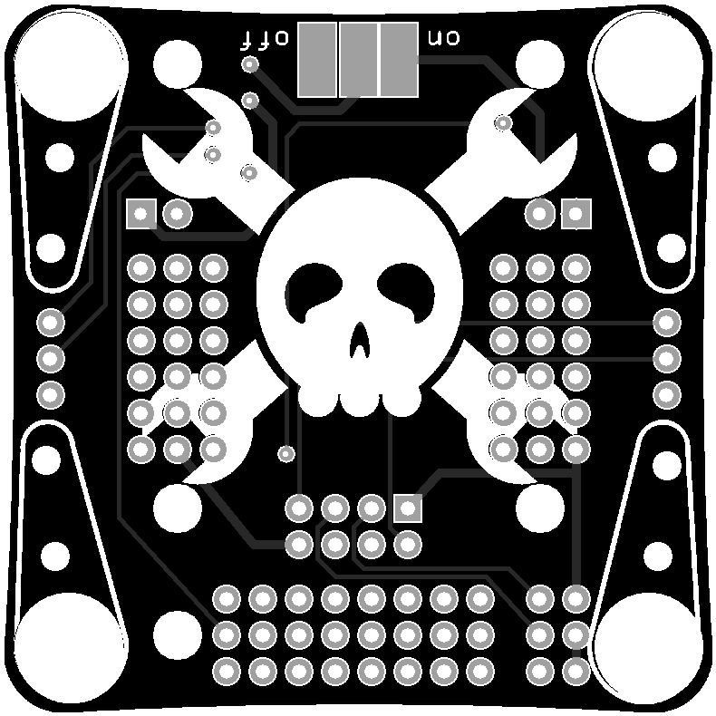
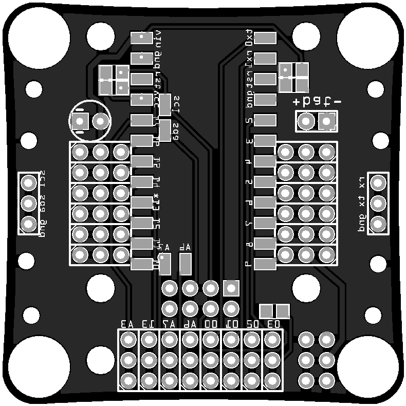

Workshop Preparations¶
Published on 2016-02-29 in Tote HaD.
Since my workshop was accepted, I started preparing for it. First of all, I went and ordered all the required parts from Aliexpress, since you can never tell how long it will take them to reach here. I split the order into many small packages, so even if some of them don’t arrive on time, I will be able to replace them with the parts from my personal stock.
Second, since I needed to order the printed circuit boards, I decided to redesign them a little bit, both to include the Jolly Wrencher logo, and to include some of the improvements that I came up with since the last iteration. More on that later.
 Once the boards and parts are here, I will need to build and test one prototype, and then pre-assemble all the boards. I think that at the least I will have to do all the soldering – because I really don’t think I will be able to teach people to solder during the workshop, and I don’t want injuries.
While building the prototype, I will make the photographs illustrating all the steps, and upload them here as the instructions. Then I will have them printed for the workshops.
Finally, there will be some changes in the software. I already did some preliminary experiments, and I think that I can make the whole thing much easier to experiment with.